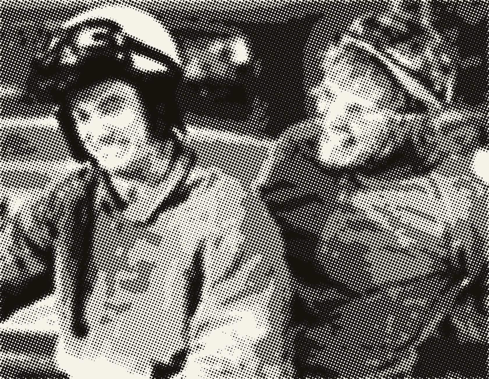

ARISTOTLE
IS AI MAKING YOU DUMBER?
Offloading thinking to machines is convenient — but use it or lose it. Digital Aristotle measures the mental muscles AI tends to atrophy and tracks them over time, so you can tell reliably whether you're staying sharp.
The battery — 10 tests
Ten short tests, each a standard paradigm from cognitive science. Run any on its own — recent solo runs automatically count toward a full assessment.